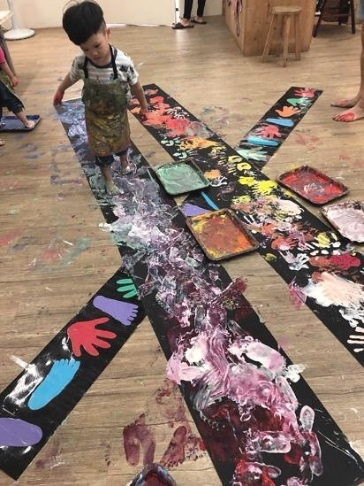
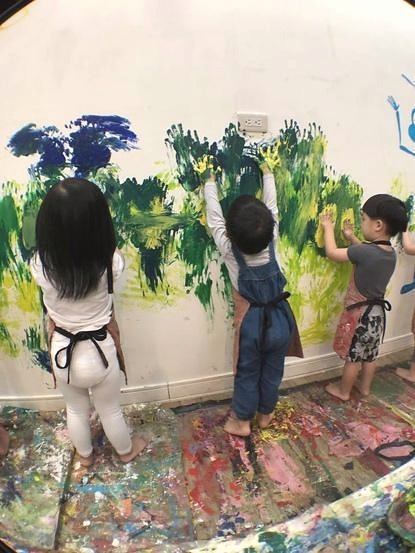

創作技法說明
設置觸覺牆、香氣區、光影區、聲音角落等五感體驗場域 , 孩子自由行走後再創作拼貼或情境畫。
8. 感官旅程法 ( Sensory Journey Pedagogy ) 教室變展場 , 創造五感旅程 , 引導孩子在走動與感受中進入創作。


設置觸覺牆、香氣區、光影區、聲音角落等五感體驗場域 , 孩子自由行走後再創作拼貼或情境畫。
孩子在這個方法中，不只是使用材料或學習技巧，而是在嘗試中建立自己的判斷：我看見了什麼？我想怎麼改變？我可以用什麼方式表達？這些過程會慢慢累積成孩子面對世界的感受力、思考力與創造力。